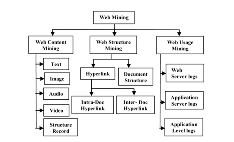
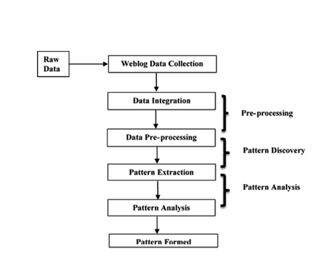
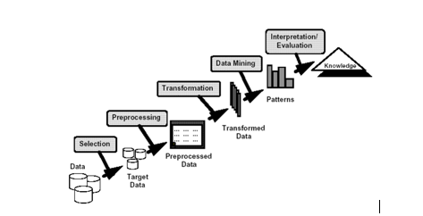
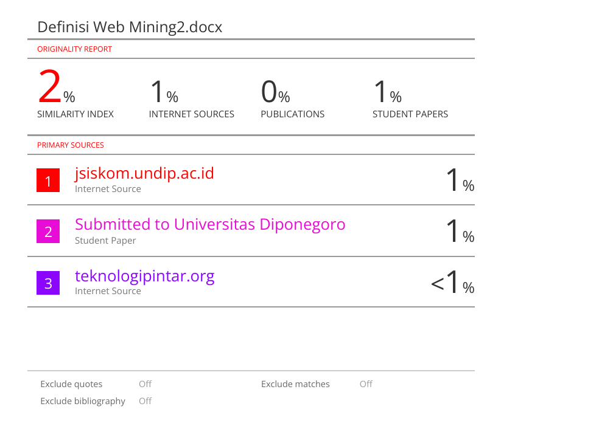

.jpg)
Pengantar Web Mining#
1. Definisi#
Web merupakan kumpulan informasi dan data yang menawarkan kesempatan besar untuk dijelajahi demi menciptakan wawasan yang bermanfaat bagi masyarakat dan entitas tertentu. Informasi dan data yang ada di internet memiliki karakteristik yang berbeda dibandingkan dengan data yang disimpan secara konvensional. Luasnya web menyebabkannyamembuat metode penyimpanan data dan penambangan data tradisional menjadi kurang efektif. Jumlah data yang ada di web bisa menjangkau ribuan terabyte dan terus mengalami peningkatan. Sekarang ini, banyak perusahaan serta organisasi yang mempublikasikan berbagai informasi tentang bisnis mereka di situs web. Dengan ukuran yang sangat besar tersebut, menciptakan data warehouse untuk menyimpan semua data dan informasi ini menjadi tantangan yang signifikan. Kompleksitas dari halaman-halaman web jauh lebih tinggi jika dibandingkan dengan dokumen teks standar. Halaman web memiliki banyak struktur yang berbeda-beda. Selain itu, dari sudut pandang konten yang disajikan, halaman web menawarkan beragam bahasa, gaya penulisan, struktur, dan tampilan. Penambangan web adalah proses untuk menemukan pola-pola penting dan bermanfaat yang secara tidak langsung tersimpan dalam kumpulan data besar di layanan internet.(Suratno, Prahasto, and Rochim 2014).
2. Tantangan Pemrosesan Data Web#
Pemrosesan data web dan big data di zaman kini berhadapan dengan tantangan yang sangat rumit dan berlapis. Dari perspektif teknis, perusahaan perlu menangani volume data yang sangat besar, bahkan mencapai petabyte, yang tak mampu dikelola oleh sistem konvensional, sambil memenuhi permintaan pemrosesan secara real-time untuk informasi dari sensor IoT, platform media sosial, dan transaksi daring. Di samping itu, keberagaman jenis data, mulai dari format terstruktur hingga semi-terstruktur seperti XML dan JSON, serta data tidak terstruktur yang meliputi gambar, video, dan teks yang tidak terorganisir, memperumit pengelolaan informasi. Isu keamanan juga menjadi fokus utama, karena penyebaran data di berbagai tempat meningkatkan kemungkinan kebocoran dan serangan siber, yang memerlukan penggunaan sistem enkripsi, autentikasi, dan pengawasan akses yang ketat. Dari perspektif operasional, penggabungan informasi dari berbagai sumber sering kali menghadirkan tantangan mengenai konsistensi antar sistem, sedangkan lemahnya ketersediaan sumber daya manusia yang terampil dalam teknologi big data seperti NoSQL dan Apache Hadoop menjadi suatu kendala tersendiri. Dalam hal ekonomi, pengelolaan big data menuntut investasi yang signifikan untuk infrastruktur, pemeliharaan sistem yang rumit, dan pengeluaran untuk pelatihan tenaga kerja. Oleh karena itu, keberhasilan pengelolaan database di era big data tidak hanya bergantung pada penggunaan teknologi mutakhir, tetapi juga memerlukan pendekatan menyeluruh yang mencakup investasi pada infrastruktur yang dapat ditingkatkan, pengembangan kapasitas tenaga kerja yang berkualitas, penerapan pedoman keamanan yang menyeluruh, serta kerjasama strategis antara berbagai pemangku kepentingan untuk membangun ekosistem manajemen data yang efisien dan berkelanjutan(Asmita 2025).
3. Taxonomy Web Mining#

Dari gambar tersebut menggambarkan taksonomi Web Mining, yang merupakan pengklasifikasian dari web mining menjadi tiga kategori utama. Pertama adalah Web Content Mining, yang menekankan pada konten atau isi dari halaman web, meliputi teks, gambar, audio, video, dan data yang terstruktur seperti tabel atau metadata. Kedua, Web Structure Mining, yang berkaitan dengan struktur atau relasi di antara halaman-halaman web. Di bagian ini, terdapat analisis hyperlink yang dibagi menjadi intra-document hyperlink (hubungan dalam dokumen yang sama) dan inter-document hyperlink (hubungan antar dokumen yang berbeda), serta analisis struktur dokumen untuk memahami desain dan penggunaan tag HTML atau XML. Ketiga, Web Usage Mining, yang menggunakan data interaksi pengguna dengan situs web, termasuk data dari log server web, log server aplikasi, hingga log tingkat aplikasi untuk mengidentifikasi pola perilaku pengguna. Oleh karena itu, taksonomi ini memberikan pemahaman bahwa web mining bukan hanya sekadar fokus pada konten, tetapi juga mencakup struktur hubungan antara halaman dan perilaku pengguna dalam berinteraksi dengan web(Kumar 2015).
4. Penambangan Isi Web (Content Mining)#
Web Content Mining adalah salah satu dari tiga jenis teknik dalam Web Mining yang berfokus pada proses penambangan, ekstraksi, serta integrasi data, informasi, dan pengetahuan yang berguna dari konten halaman web. Teknik ini bertujuan untuk menemukan informasi yang relevan dari berbagai jenis data di web, seperti teks, gambar, audio, video, maupun struktur dokumen. Berbeda dengan data mining yang umumnya menangani data terstruktur, Web Content Mining lebih banyak berhadapan dengan data semi-terstruktur atau tidak terstruktur, sehingga proses penemuan pola pengetahuan baru sering kali menjadi tantangan. Dalam praktiknya, Web Content Mining melakukan pemindaian terhadap konten dan mengelompokkan halaman web sesuai isi yang dimasukkan pengguna, seperti pada mesin pencari yang menampilkan saran relevan ketika seseorang mencari sebuah lagu. Dengan demikian, Web Content Mining berperan penting dalam mengolah keragaman data web untuk menghasilkan informasi yang bermanfaat bagi pengguna.
5. Text Mining#
Penggalian teks merupakan kegiatan untuk mengambil informasi yang berharga dari sekumpulan teks yang tidak teratur dengan memanfaatkan teknik dari penambangan data dan pemrosesan bahasa alami (NLP). Sasaran utama dari penggalian teks adalah menemukan pola-pola, koneksi, atau wawasan baru yang terpendam dalam dokumen untuk membantu proses pengambilan keputusan, analisis data, dan penemuan pengetahuan. Dengan demikian, penggalian teks menjadikan informasi yang sebelumnya sulit diakses atau terpendam dalam teks besar menjadi lebih mudah untuk dipahami dan digunakan.
6. Aplikasi Text Mining#
A. Ekstraksi Informasi#
Ekstraksi data merupakan langkah dalam ranah Pemrosesan Bahasa Alami (NLP) yang bertujuan untuk mengubah teks yang tidak terstruktur menjadi informasi yang teratur dengan cara mengambil fakta-fakta utama, seperti entitas, kejadian, dan keterkaitan di antara entitas. Metode ini memungkinkan pemrosesan informasi dari teks yang bebas, seperti berita atau situs web, sehingga dapat diolah menjadi pengetahuan yang lebih sistematis untuk disimpan dalam database dan digunakan untuk analisis yang lebih mendalam(Susanti and Mustofa 2015).
B. Topic Modelling#
Modeling topik merupakan suatu pendekatan dalam penggalian teks yang ditujukan untuk mengenali serta mengambil hubungan antar istilah dalam sekumpulan artikel sehingga dapat secara otomatis menghasilkan tema tertentu. Pendekatan ini umumnya digunakan untuk menganalisis isu-isu atau tema yang sedang tren dalam suatu kumpulan teks, contohnya dalam sektor kesehatan, pendidikan, atau riset. Dengan memanfaatkan algoritma seperti Latent Dirichlet Allocation (LDA) atau Non-negative Matrix Factorization (NMF), modeling topik dapat mendeteksi pola yang tidak terlihat dalam data teks yang besar dan tidak terorganisir. Penelitian tentang modeling topik dengan berbagai kumpulan bahasa telah banyak dilakukan oleh para akademisi, karena teknik ini berfungsi untuk merangkum, mengelompokkan, serta mengakses wawasan dari sekumpulan dokumen dengan cara yang lebih efisien dan teratur(Novarian, Khomsah, and Arifa 2023).
C. Peringkasan Dokumen#
Peringkasan dokumen merupakan langkah untuk mengubah teks yang panjang menjadi versi yang lebih singkat sambil tetap menjaga informasi utama yang terdapat di dalamnya. Tujuan dari kegiatan ini adalah untuk memudahkan individu memahami isi dokumen dengan cepat tanpa perlu membaca keseluruhan teks yang semakin melimpah seiring dengan kemajuan teknologi dan internet. Dengan melakukan peringkasan, elemen-elemen penting dari suatu artikel atau dokumen bisa diangkat sehingga informasi pokok dapat diakses, dipahami, dan dimanfaatkan untuk analisis atau pengambilan keputusan dengan cara yang lebih efisien(Maharani and Sanjaya 2013).
D. Klasifikasi Dokumen#
Klasifikasi dokumen merupakan suatu langkah untuk mengenali dan mengelompokkan dokumen ke dalam kategori tertentu sesuai dengan kriteria yang sudah ditentukan, seperti jenis dokumen, tema, waktu, atau karakteristik lainnya. Sasaran dari klasifikasi ini adalah untuk memudahkan pengelolaan, penyimpanan, dan pencarian dokumen sehingga setiap dokumen dapat dikelompokkan pada kategori yang sesuai, diatur dengan cara yang sistematis, dan lebih mudah diakses ketika diperlukan(Dewi 2024).
E. Pengelompokan Dokumen#
Pengelompokan dokumen merupakan teknik dalam penambangan teks yang bertujuan untuk menyusun koleksi dokumen teks ke dalam kategori-kategori berdasarkan persamaan isi atau tema yang ada di dalamnya. Dengan melakukan pengelompokan, dokumen-dokumen yang memiliki karakteristik atau data yang serupa dapat dikelompokkan dalam satu kluster, sehingga memudahkan dalam pencarian, analisis, dan penggunaan informasi dengan cara yang lebih efisien. Teknik ini sangat krusial karena jumlah data teks yang terus berkembang dengan pesat dan beragam, sehingga tanpa adanya pengelompokan, pengguna akan kesulitan dalam menemukan informasi yang relevan(Hayati, Ludviani, and Rosyadi 2015).
F. Ekstraksi Kata Kunci#
Ekstraksi kata kunci merupakan langkah untuk memperoleh sekumpulan kata atau frasa singkat yang mencerminkan inti dari sebuah tulisan. Sasaran dari proses ini adalah untuk mengidentifikasi istilah-istilah penting yang paling berhubungan dengan materi dokumen, sehingga mendukung pengindeksan, pencarian data, dan sistem rekomendasi. (Nugroho 2019).
7. Web Usage Mining#
Web Usage Mining adalah salah satu aspek dari web mining yang mengutamakan penggalian pola perilaku pengguna berdasarkan data jejak aktivitas mereka saat berinteraksi dengan situs web. Sumber data yang digunakan umumnya diperoleh dari catatan server, proxy server, atau browser, yang mencakup rincian mengenai halaman yang dikunjungi, urutan akses, waktu kunjungan, dan durasi interaksi di setiap halaman. Melalui analisis informasi tersebut, Web Usage Mining dapat menawarkan wawasan tentang keinginan dan preferensi pengguna yang kemudian dimanfaatkan untuk berbagai keperluan, seperti penyesuaian konten, peningkatan kualitas layanan, perbaikan desain situs web, pengembangan sistem rekomendasi, hingga perencanaan strategi pemasaran digital. Dengan demikian, Web Usage Mining memiliki peran yang signifikan dalam membantu pengelola situs web memahami perilaku pengguna secara lebih mendalam sehingga pengalaman pengguna dapat dioptimalkan dan tujuan bisnis dapat dicapai.
8. Proses Web Usage Mining#

A. Preprocessing (Pra-pemrosesan Data)#
Tahap awal dari Penambangan Penggunaan Web adalah preprocessing, yang merujuk pada proses pengolahan awal terhadap data mentah yang diambil dari log web, baik berasal dari server, proxy, maupun browser. Log web sering kali berukuran besar, tidak terstruktur, dan mengandung banyak gangguan seperti kunjungan dari bot, permintaan file gambar, atau data duplikat yang tidak relevan untuk analisis. Oleh sebab itu, tahap ini bertujuan untuk membersihkan data, menyaring informasi yang penting, dan melakukan transformasi sehingga data dapat digunakan pada tahap berikutnya. Proses preprocessing sangat krusial karena kualitas data yang diterima akan sangat memengaruhi mutu pola yang dihasilkan.
B. Pattern Discovery (Penemuan Pola)#
Setelah data dipersiapkan, langkah selanjutnya adalah penemuan pola, yaitu proses untuk menemukan pola atau informasi yang tidak terlihat dari data yang telah diproses. Berbagai metode penambangan data dapat diterapkan pada langkah ini, seperti penambangan aturan asosiasi untuk mengidentifikasi hubungan antara halaman atau perilaku pengguna, pengelompokan untuk mengatur pengguna dengan akses yang mirip, klasifikasi untuk mengidentifikasi pengguna ke dalam kategori tertentu, serta penambangan pola urutan untuk menemukan rangkaian kunjungan halaman yang sering terjadi. Proses ini menghasilkan pola perilaku pengguna yang dapat memberikan wawasan berharga tentang interaksi mereka dengan situs web.
C. Pattern Analysis (Analisis Pola)#
Tahap akhir adalah analisis pola, yang merupakan langkah untuk mengevaluasi dan menganalisis pola yang telah ditemukan demi memastikan bahwa pola tersebut benar-benar bermanfaat dan berhubungan dengan tujuan dari analisis. Proses analisis bisa dilakukan dengan menggunakan query, OLAP, metode statistik, atau visualisasi data untuk memudahkan pemahaman mengenai pola yang ada. Output dari tahap ini sering kali dimanfaatkan dalam berbagai bidang, seperti kustomisasi konten situs web, pengembangan sistem rekomendasi, perbaikan desain situs web, sampai penyusunan strategi pemasaran digital. Dengan melakukan analisis yang tepat, hasil dari Web Usage Mining dapat memberikan kontribusi yang berarti bagi pengelola situs web serta penggunanya.
9. Aplikasi dari Web Usage Mining#
Product Recommendations, Rekomendasi produk merupakan sebuah sistem yang secara otomatis memberikan saran mengenai produk kepada pengguna situs web berdasarkan data perilaku mereka, termasuk riwayat pembelian, halaman yang diakses, serta popularitas produk. (Kovalenko 2025).
Personalized Search , Personalized Search adalah suatu cara mencari informasi di mana hasil yang muncul bervariasi untuk setiap individu, disesuaikan dengan preferensi pribadi, catatan pencarian sebelumnya, lokasi geografis, atau pola interaksi mereka di dunia maya(Riko 2024).
10. Penambangan Struktur Web (Web Structure Mining)#
Web Structure Mining merupakan salah satu bagian dari web mining yang berkonsentrasi pada pengkajian keterhubungan antar halaman web dengan memanfaatkan konsep graf. Dalam metode ini, halaman web diperlakukan sebagai node, sedangkan tautan antara halaman dianggap sebagai edge, sehingga membentuk graf web. Pengkajian ini dilakukan untuk mengidentifikasi pola keterkaitan, baik di antara halaman (inter-page) maupun struktur dalam halaman (intra-page) seperti penggunaan tag HTML/XML. Dengan metode ini, halaman-halaman yang memiliki peranan penting atau berpengaruh dapat dikenali, misalnya melalui penerapan algoritma PageRank dan HITS, yang selanjutnya digunakan untuk meningkatkan kualitas penelusuran dan pengelolaan data(GeeksforGeeks 2024).
11. Aplikasi Web Structure Mining#
Google Search dengan PageRank menggunakan graph mining untuk menganalisis struktur link antar website. Algoritma ini menghitung “otoritas” sebuah halaman berdasarkan jumlah dan kualitas link yang menuju ke halaman tersebut. Semakin banyak website berkualitas yang menlink ke suatu halaman, semakin tinggi ranking-nya dalam hasil pencarian.
Twitter/Instagram untuk deteksi influencer menggunakan network analysis untuk mengidentifikasi node-node penting dalam graf sosial. Mereka menganalisis follower count, engagement rate, dan betweenness centrality untuk menentukan siapa yang memiliki pengaruh besar dalam menyebarkan informasi. Platform ini juga menggunakan community detection algorithms untuk menemukan cluster users dengan minat serupa.
Analisis Jaringan Sosial untuk deteksi misinformasi menggunakan graph mining untuk melacak bagaimana informasi menyebar melalui jaringan. Algoritma dapat mengidentifikasi “super spreaders” atau akun yang sering menyebarkan konten viral, serta mendeteksi pola penyebaran yang mencurigakan seperti koordinated inauthentic behavior.
Proses Web Mining#

A. Pengumpulan data Web#
Web Crawling : dimana mengambil dokumen atau halaman web secara otomatis
Web API : dimana mengambi data dari layanan atau platform yang menyediakan api
B. Eksplorasi Data#
Meneliti struktur dan isi data web.
Melakukan ringkasan statistik untuk memahami distribusi, missing values, atau outlier.
Membuat visualisasi untuk mempermudah interpretasi.
C. Mentransformasi data ke dalam representasi data yang sesuai dengan metode data mining#
Transformasi data: Mengubah data ke format yang sesuai untuk metode data mining.
Diskretisasi dan binarisasi: Mengubah data kontinu menjadi kategori atau format biner jika diperlukan.
Transformasi teks atau atribut menjadi vektor/embedding.
Reduksi dimensi dan seleksi fitur: Mengurangi jumlah fitur untuk mengurangi kompleksitas model.
Integrasi berbagai sumber data jika data berasal dari banyak sumber.
D. Pemrosesan data butuh waktu 70-80% dari proyek data mining#
Menggunakan metode data mining untuk membangun model atau menemukan pola.
Melakukan evaluasi model untuk menilai kualitas prediksi atau pola yang ditemukan.
E. Mempersiapkan data dengan baik akan menghasilkan model yang layak dan valid#
Menguji model dengan hyperparameter berbeda.
Mencoba beberapa metode data mining lain.
Memperbaiki praproses data atau pembangkitan fitur.
Meningkatkan jumlah dan kualitas data pelatihan.
Daftar Pustaka#
Asmita, Andhini. 2025. “Manajemen Database Di Era Big Data: Teknologi Dan Tantangan.” Jurnal Sains Student Research 3(3):318–27.
Dewi, Pamela Anisa. 2024. “Apa Itu Klasifikasi Dokumen Dan Pentingnya Untuk Bisnis.” https://mekari.com/blog/apa-itu-klasifikasi-dokumen/.
GeeksforGeeks. 2024. “Web Structure Mining.” https://www.geeksforgeeks.org/data-science/web-structure-mining/.
Hayati, Khadijah F., Resti Ludviani, and Arini R. Rosyadi. 2015. “Pengelompokan Dokumen Menggunakan Dokumen Berlabel Dan Tidak Berlabel Dengan Pendekatan Modified Heuristic Fuzzy Co-Clustering.” Jurnal Buana Informatika 6(2):103–12. doi:10.24002/jbi.v6i2.409.
Kovalenko, Oleksii. 2025. “What Are Product Recommendations? Types & Strategies.” https://wisepops.com/blog/product-recommendations.
Kumar, Shyam Nandan. 2015. “World towards Advance Web Mining: A Review.” American Journal of Systems and Software 3(2):44–61. doi:10.12691/ajss-3-2-3.
Maharani, Herastia, and Monica Sanjaya. 2013. “Peringkasan Dokumen Dengan Metode Non-Negative Matrix Factorization.” Jurnal Telematika 8(2):4. doi:10.61769/telematika.v8i2.71.
Novarian, Nathanael, Siti Khomsah, and Amalia Beladinna Arifa. 2023. “Topic Modeling Tugas Akhir Mahasiswa Fakultas Informatika Institut Teknologi Telkom Purwokerto Menggunakan Metode Latent Dirichlet Allocation.” LEDGER: Journal Informatic and Information Technology 2(1):14–27.
Nugroho, Fajar. 2019. “Ekstraksi Kata Kunci Otomatis Pada Website Menggunakan Semantic Relatedness Dan Artificial Neural Network.” Universitas Komputer Indonesia.
Riko, Dinda. 2024. “Apa Itu Personalized Search: Cara Kerja, Fungsi + 4 Hal Terbaru.” https://www.garuda.website/blog/apa-itu-personalized-search/.
Suratno, Tri, Toni Prahasto, and Adian Fatchur Rochim. 2014. “Web Usage Mining, Pattern Discovery Dan Log File.” Jurnal Sistem Informasi Bisnis 1(2):94–99. doi:10.21456/vol1iss2pp93-98.
Susanti, Erma, and Khabib Mustofa. 2015. “Ekstraksi Informasi Halaman Web Menggunakan Pendekatan Bootstrapping Pada Ontology-Based Information Extraction.” IJCCS (Indonesian Journal of Computing and Cybernetics Systems) 9(2):111. doi:10.22146/ijccs.7540.
Bukti Turnitin#
